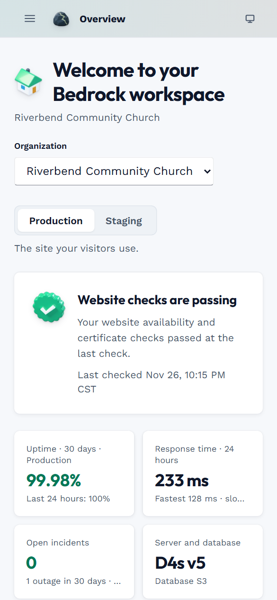

Bedrock
The Overview page
The Overview is the first page you see after signing in. It answers four questions, top to bottom: is the website up, how has it been doing, does anyone need to do anything, and what is on your plan.

Organization and environment
At the top right, Organization shows which church you are looking at. If your account has access to more than one, pick the other one here.
If your church has a staging site, a Production / Staging switch appears under the page title on Overview, Performance and Incidents.
- Production is the site your visitors use.
- Staging is a test copy of your site, for trying changes first.
Churches with only a production site do not see the switch.
The status card
The card at the top says in one line how your website is doing right now, with the time of the last check in your church’s time zone.
| It says | What it means |
|---|---|
| Website checks are passing | Your website answered and its security certificate was valid at the last check. |
| Your website is not responding | A check could not reach your site. The card says since when. DTS can see this and is tracking it. |
| Your website is up but responding slowly | The site answers, but pages may take longer to load for a while. |
| … the security certificate is due for renewal | DTS tracks certificate renewals. Nothing is needed from you unless DTS gets in touch. |
| … a server health alert is open | Something on the server (such as processor or disk use) crossed a limit. Your website may be unaffected. |
| Website monitoring hasn’t started yet / Website checks are starting up | You are still being set up. DTS turns checks on; nothing is needed from you. |
| Website checks haven’t reported recently | The last check is older than expected. It does not mean your website is down; DTS can see it. |
If the card says your website is not responding, you do not need to report it: DTS sees the same thing. Check back on this page for the latest status.
The four figures
| Figure | What it shows |
|---|---|
| Uptime · 30 days | The share of checks your site answered in the last 30 days, with the last 24 hours underneath. Green is 99.9% or better, amber is 99% to 99.9%, red is below 99%. |
| Response time · 24 hours | How long your site took to answer, on average, with the fastest and slowest check. |
| Open incidents | How many problems are open right now, with the number of outages and total time down in the last 30 days. |
| Server and database | The size of your server and the speed tier of your database, if DTS hosts them for you. |
See performance in detail opens Performance; Incident history opens Incidents.
What happens next
This section says who has the next step. When nothing is waiting on you it says No new action is needed from you right now.
| Heading | What is listed under it |
|---|---|
| Your next steps | Things waiting on your church: finishing the setup questions, a change DTS asked for to your maintenance preference, or a service that needs your team’s input. Each has a button that takes you to the right place. |
| With DTS or a provider | Things you have sent that DTS is reviewing, and services DTS or an outside provider is working on. |
| Latest from DTS | Recent decisions, such as DTS accepting your maintenance preference. |
If DTS needs a change made where your domain name is managed, a Connect your website card appears here with the exact values to copy. Pass it to whoever manages your domain.
Your services
The list at the bottom shows each service on your plan and where it stands. The line under each name says where the status comes from and how recently it was confirmed.
| Status | Meaning |
|---|---|
| Verified | Bedrock checked this itself and it is in place. |
| Delivered | Your DTS team recorded it as in place. |
| DTS is working on this | In progress on the DTS side. |
| Waiting on you | DTS needs something from your church. Check What happens next, or ask DTS. |
| DTS is following up / Waiting on a provider | Held up on the DTS side or with an outside company. Nothing is needed from you. |
| Not started yet | Normal while you are being set up. |
| Set up later | An optional service you and DTS agreed to postpone. Ask DTS when you are ready. |
The last line gives your plan, whether you are still getting set up or in ongoing care, and a link to your reports.
On a phone
Bedrock works in a phone’s browser. The pages are the same; the figures stack, and the menu opens from the button with three lines at the top left.
